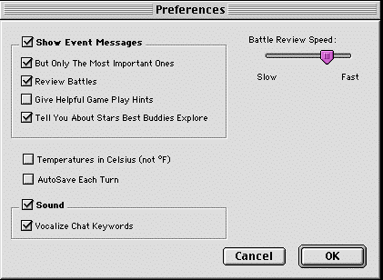

La primera vez que ejecutes Spaceward Ho!, se creará un archivo de preferencias llamado “Spaceward Ho! 5.0 Prefs” en la carpeta Preferencias de la Carpeta del Sistema de tu disco de arranque.
Guardamos todo en el archivo de preferencias: dónde te gusta colocar las ventanas, si quieres el sonido activado o desactivado, tu velocidad de batalla preferida, etcétera.
Además, el archivo de preferencias guarda los nombres de las personas con las que has jugado, los nombres de las naves que diseñas y las estrellas a las que pones nombre por ganar la partida.
Para empezar de cero (por ejemplo, si una vez pusiste a una nave el nombre de tu nueva exnovia y ver su nombre te trae recuerdos dolorosos), basta con tirar el archivo de preferencias. Toda esta información (¡incluidos tus puntos maestros fuera de la red!) se borrará.
La mayoría de las Preferencias se ajustan con “Preferencias… ”.

Si esta opción está marcada, los mensajes de sucesos se mostrarán en la esquina inferior izquierda del mapa al comienzo de cada turno. Haz clic en el mensaje o pulsa Retorno para pasar al siguiente. Todos los mensajes aparecen en la Ventana de informes, esté o no marcada esta opción.
Esto elimina muchos de los mensajes de “cháchara”, como cuando las naves reposta y cuando gastas dinero en terraformar estrellas no rentables. Deja los mensajes de batalla y de avance tecnológico, así como las supernovas y cosas por el estilo.
Esta opción solo importa si la de arriba, “Mostrar los mensajes de sucesos”, también está marcada. Si lo están las dos, cada vez que esté a punto de mostrarse un mensaje de batalla, la batalla se revisará automáticamente. Si no está marcada, solo se mostrará el mensaje de resumen.
Aquí puedes controlar la velocidad de los disparos y las explosiones en las revisiones de batalla. Si te aburre ver batallas, acelérala. Activar “Las pilas disparan juntas” acelerará las batallas considerablemente, sobre todo las batallas gigantes. Desmarcar “Batallas con animación completa” se saltará los gráficos de las explosiones y las batallas irán todavía más rápido.
Si esta opción está marcada, Spaceward Ho! guardará la partida en su archivo de partida guardada cada turno, de modo que, si se va la luz inesperadamente, puedes seguir justo donde lo dejaste.
Esto hace que Spaceward Ho! reproduzca sonidos cuando ciertas palabras del chat aparecen en la ventana de chat. Algunos ejemplos son LOL, jeje y el favorito #$&@!
Traducción al español del remake, no oficial, del manual de Delta Tao. La página en inglés (en inglés).